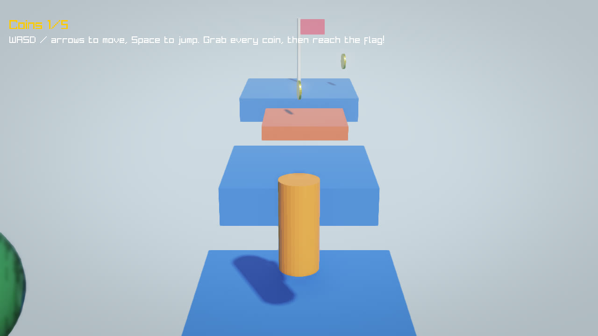
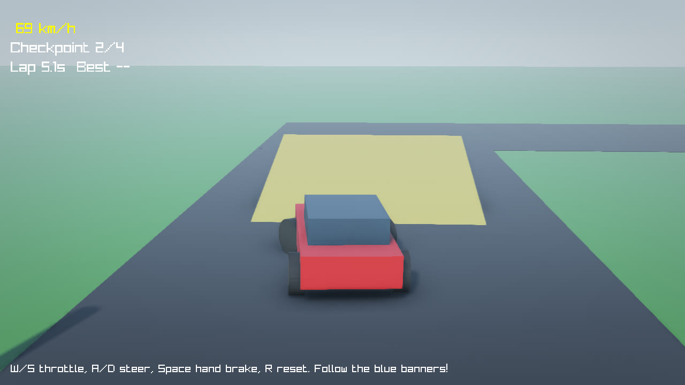
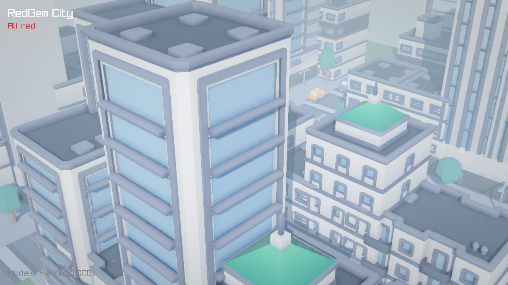
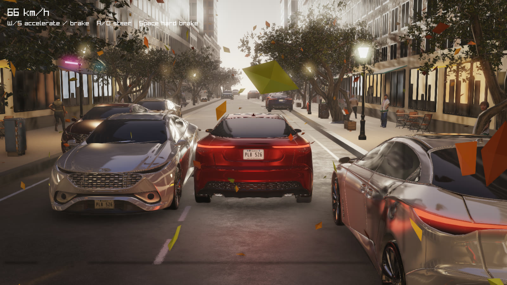
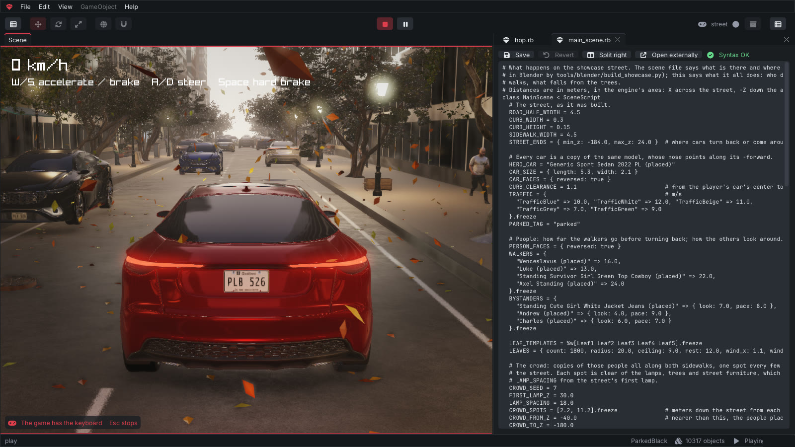
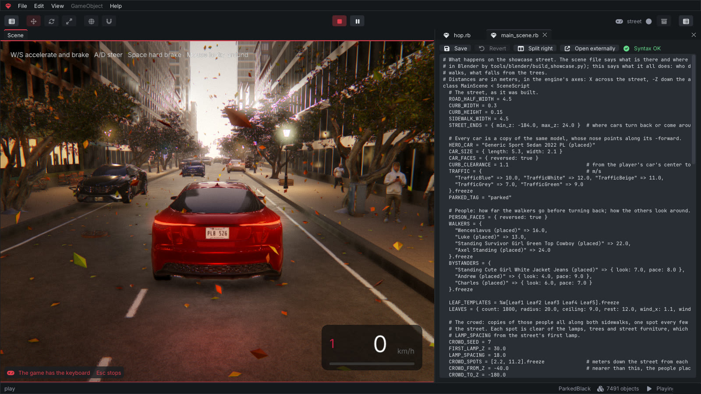

With Ruby, the most human-friendly language.
RedGem is a game engine with its own editor. Build your levels, write the gameplay in Ruby, press Play, ship it for Linux, Windows and Android.
Experimental. A young engine with rough edges, built on open source: Blender, Jolt Physics, raylib, mruby and more.
Video assets. Models from Sketchfab under
CC BY 4.0:
Samurai by fletcherkinnear ·
Viking by Andy Woodhead ·
Leopard 2 A6 by buh ·
Katana by Joan LP ·
Viking battle axe by Mikhail Antonov ·
Coniferous Forest Assets Pack by Dari ·
Grass claster by VRA ·
Residences of Rothenburg ob der Tauber by shotkey ·
BMW E30 and
Cadillac 75 by ROH3D ·
Linden tree by Georgeous ·
Vintage lamp post by dasmodal ·
Street Bench by donnichols.
Characters' animations from Mixamo ·
sky, plants and textures from Poly Haven (CC0) ·
particles from Kenney (CC0) ·
city: Poly Haven and ambientCG (CC0), car and people from BlenderKit.
Scripting
Players, enemies, pickups, rules, HUD: each one is a behaviour you attach to objects. No bindings to write, no build step. Save the file and press Play.
require: a class loads the first time you use its name.# scripts/player.rb class Player < Behaviour SPEED = 6.0 JUMP = 9.0 def update(dt) move = Vector3.new(Input.axis(:horizontal), 0, -Input.axis(:vertical)) character.move(move.normalized * SPEED) character.jump(JUMP) if Input.action_pressed?(:jump) && character.grounded? end def on_trigger_enter(other) return unless other.tag?(:coin) Audio.play(:coin) GameManager.instance.collect_coin other.destroy end end
# scripts/main_scene.rb class MainScene < SceneScript SPEEDS = { "Slime" => 1.5, "Bat" => 4.0 } def setup find!("Hero").add_component(Player) Camera.main.add_component(CameraFollow) SPEEDS.each do |name, speed| enemy = find!(name) enemy.add_component(Patrol, speed: speed) end find_all(:coin).each { |c| c.add_component(Spin) } end end
Scenes
Levels are plain glTF files, built in the editor or exported from Blender. A scene script attaches behaviours, sets their parameters and spawns copies, so the whole game stays in one language.
Made with RedGem
These demos ship with the engine, scripts and tests included. Each is a small game or scene built to exercise a different part of it.




Editor
Scene view with gizmos, hierarchy, inspector, Ruby tabs that split side by side, a console with backtraces, and a Play button that runs the game right where you are editing.


Features
Keyboard, mouse and gamepad, triggers and collisions, timers and tweens, particles, sound and music, saved progress, level loading, spawning from templates.
Games on the same network find each other; over the internet, players meet in a room by a short code, through a relay that ships with the engine, or join a dedicated server with rooms of its own and saves in SQLite. The game can approve each player. Scripts talk in named messages, and objects stay in sync across machines in a compact binary format.
Buttons, images and text drawn from Ruby; pause the game with a menu on top. A title screen, pause and end screen ship with the template.
PBR materials, a sky picture (HDR) that lights the scene, cascaded soft shadows, reflections, ambient occlusion, bloom, fog, color grading, speed blur, MSAA and temporal anti-aliasing. Thousands of trees and grass blades drawn at once with Scatter.
Particles that change size, color and transparency over their life, flipbooks, soft and lit particles, see-through materials, and lights scripts can change.
redgem mygame --record out.mp4 plays your game frame by frame into a video, at any size, for trailers and screenshots.
Every text the editor and your game show comes from a translation file, so a game can speak its player's language.
A settings screen your players reach from the title and pause menus: window mode, resolution, render scale, vsync, quality presets and volume, plus a controls page to rebind every action on the keyboard and up to four gamepads. Scripts read and change it all through Settings and Input.
Audio.play_at places a sound in the world: it pans and fades with its distance from the listener, and scripts move it with whatever makes it.
UI text draws Greek, Cyrillic, Polish, Turkish, the euro sign and more, and a game can bring its own font from fonts/.
Saves are written whole and keep a backup, so a crash or a power cut never loses them. A script stuck in a loop is stopped and the game goes on, and a crash leaves a report beside the save.
Give your game an icon, a version and a splash picture in game.json: each build turns them into the system's own. Mac apps, Android App Bundles for Google Play, and Android apps that ask for the network only when the game goes online.
Every new game comes with a guide for coding assistants, and the command line gives them text instead of windows: read and change scenes, run the game, take a picture of it, check it, search the API. How it works.
Ground you sculpt in the editor with a brush: raise, lower, smooth, flatten. Collisions follow its shape.
Rigid bodies, character controllers, vehicles with wheels, triggers and raycasts.
Skeletal animation from glTF, GPU skinning with up to 1024 bones, a clip per character with fades and mixing, crowds of copies out of step with each other, animations kept in step online.
Model and lay out levels in Blender; custom properties carry gameplay data into the game.
System tests are Ruby scripts that play the game frame by frame and take screenshots.
One click makes your game a Linux binary, a Windows .exe or an Android .apk, all built from Linux; on a Mac, a Mac app. On a phone, touch controls appear by themselves.
Workflow
Build the level in Blender and export it as glTF, or drop models into the editor.
Write behaviours in Ruby in the editor's tabs, or in your own editor.
Press Play: the game runs in the scene view with your latest edits.
Build for Linux, Windows or Android and share it.
Built with
RedGem was not built from zero. It is C++17 glue and tooling around these projects, and would not exist without them. Thank you to the people behind them.
| Project | Used for | License |
|---|---|---|
| Blender | Modeling, level building and the scene exporter | GPL |
| Jolt Physics | Rigid bodies, characters, vehicles, raycasts | MIT |
| mruby | The Ruby interpreter that runs game scripts | MIT |
| raylib | Window, input, OpenGL rendering, audio | zlib |
| cgltf | Loading glTF scenes | MIT |
| Dear ImGui | The editor's interface | MIT |
| rlImGui | Dear ImGui on raylib | zlib |
| ImGuizmo | Move, rotate and scale gizmos | MIT |
| nlohmann/json | glTF JSON and settings | MIT |
| doctest | C++ tests | MIT |
| Inter, JetBrains Mono, Font Awesome Free | Fonts and icons | OFL |
Demo assets: Kenney, Poly Haven and ambientCG (CC0); the showcase car and scanned people come from BlenderKit.
How to install
Version 0.4.0. Nothing to install. RedGem is experimental and free, under the MIT license. What is new.
x86_64, OpenGL 3.3, Ubuntu 24.04 or newer. The tested one: builds games for Linux, Windows and Android.
x86_64. Compiled from Linux and only tried under Wine so far: tell us what breaks. Builds games for Windows.
macOS 11 or newer. Tested on GitHub's Macs, not yet on a real one: tell us what breaks. Not signed by Apple: right-click the app and choose Open the first time.
Anywhere you like. To remove RedGem, delete the folder.
bin/redgem on Linux, redgem.exe on Windows, RedGem.app on a Mac. The project hub opens.
Pick Platformer, give it a name: the editor opens with a level ready to play.
Press Play. Move with WASD, jump with Space. Then open a script and change it.
The source is on GitHub: issues and small pull requests are welcome, and the known limitations are a good place to start.
Prefer to build it yourself? You need a C++17 toolchain, CMake and Ninja; every library is downloaded at a pinned version. The manual has the details, Docker included.
git clone https://github.com/carlosdanielpohlod/redgem.git && cd redgem
cmake -S . -B build -G Ninja && cmake --build build
./build/src/redgem # project hub
./build/src/redgem new my_game --template platformer